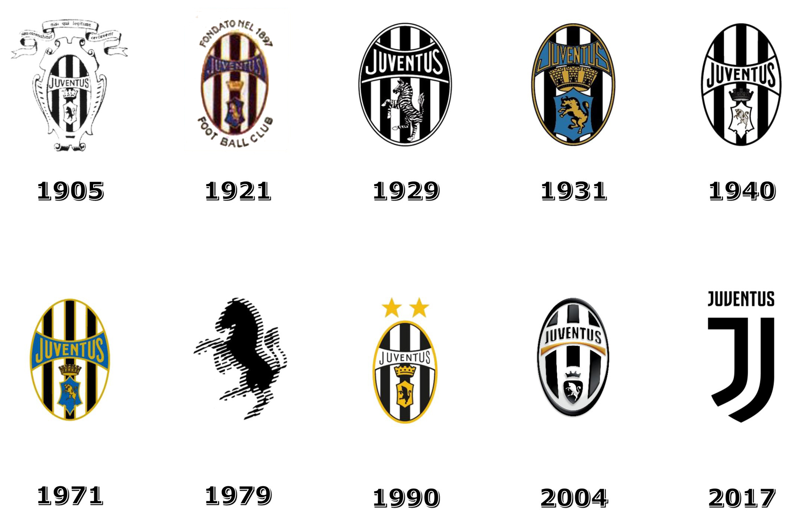

Juventus Football Club S.p.A. |
|
Навигация |
О насЮве́нтус (итал. Juventus Football Club) — итальянский профессиональный футбольный клуб из Турина, один из самых старых, титулованных, сильнейших и успешных клубов Италии, Европы и мира. Основан в 1897 году как «Спорт-клуб Ювентус» группой учащихся средней школы в Турине, является третьим старейшим итальянским клубом и одним из 2 клубов из Турина в Серии А. С 1920-х годов клубом владеет семья Аньелли. Juventus является самым титулованным клубом в Италии и занимает второе место в списке IFFHS лучших клубов мира за всю историю. В 1988 году клуб получил награду УЕФА за победы во всех турнирах, проводимых федерацией. Когда «Ювентус» выиграл суперкубок УЕФА в 1984, Межконтинентальный кубок в 1985 и кубок Интертото в 1999 году он стал единственным в мире клубом, которому покорились все турниры. ГимнОфициальный гимн футбольного клуба «Ювентус» носит название «Juve, storia di un grande amore» (итал. Юве, история большой любви), был записан автором-исполнителем Эмилиано Паоло Белли в 2006 году (Colori e simboli della Juventus Football Club). Гимн исполняется перед каждым матчем, который команда проводит на домашнем стадионе.
История логотипа |